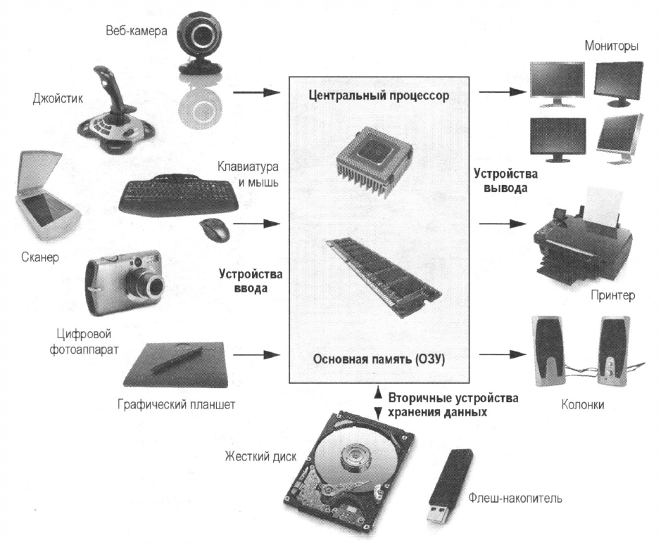

Ключевые положения:
Аппаратное обеспечение, аппаратные средства, компьютерные комплектующие, "железо", (англ. hardware) - это все физические, как электронные, так и механические части вычислительного устройства, входящие в состав системы или сети.
Рис.1.1. Типичные компоненты компьютерной системы
Различают внешнее и внутреннее аппаратное обеспечение . Согласование между отдельными узлами и блоками выполняется с помощью аппаратно-логических устройств, называемых аппаратными интерфейсами ; стандарты на аппаратные интерфейсы называют протоколами .
Персональный компьютер - универсальная техническая система, конфигурацию которой можно изменять по мере необходимости.
Типичная компьютерная система состоит из таких основных компонентов:
Рассмотрим каждый из этих компонентов.
Центральное процессорное устройство - ЦПУ (англ. central processing unit - CPU, дословно - центральное обрабатывающее устройство, часто просто процессор) - электронный блок либо интегральная схема, исполняющая машинные инструкции (код программ), главная часть аппаратного обеспечения компьютера или программируемого логического контроллера. Иногда этот компонент называют просто процессором.
Графическое процессорное устройство - ГПУ (англ. graphics processing unit, GPU) - отдельное устройство компьютера, выполняющее графический рендеринг. Может применяться как в составе дискретной видеокарты, так и в интегрированных решениях (встроенных в северный мост, либо в гибридный процессор).
Оперативное запоминающее устройство - ОЗУ (англ. Random Access Memory, RAM - память с произвольным доступом) - в большинстве случаев энергозависимая часть системы компьютерной памяти, в которой во время работы компьютера хранится выполняемый машинный код (программы), а также входные, выходные и промежуточные данные, обрабатываемые процессором. Оперативное запоминающее устройство (ОЗУ) — техническое устройство, реализующее функции оперативной памяти. ОЗУ может изготавливаться как отдельный внешний модуль или располагаться на одном кристалле с процессором, например, в однокристальных ЭВМ или однокристальных микроконтроллерах.
Постоянное запоминающее устройство - ПЗУ - это довольно широкое понятие, но мы под ПЗУ будем понимать энергонезависимую память, которая предназначена для длительного хранения информации, в том числе и когда компьютер выключен.
Примерами ПЗУ могут служить:
Устройства ввода - периферийное оборудование, предназначенное для ввода (занесения) данных или сигналов в компьютер или в другое электронное устройство во время его работы.
Устройства ввода подразделяются на следующие категории:
Компьютерные указывающие устройства ввода по способу управления курсором делят на следующие категории:
Устройства вывода - периферийные устройства преобразующие результаты обработки цифровых машинных кодов в форму удобную для восприятия человеком или пригодную для воздействия на исполнительные органы объекта управления.
Устройства вывода можно классифицировать по типу выводимой информации:
Так же стоит выделить оборудование предназначенное как для ввода так и вывода информации, устройства ввода-вывода. Примерами таких устройств могут быть интерактивная доска, дисковод, сетевая плата, флеш-накопитель.
Программное обеспечение - ПО, (англ. software) - компьютерная программа или множество программ, используемых для управления компьютером. В IT-сленге часто используется слово софт, произошедшее от английского слова software.
Компьютерная программа - 1) комбинация компьютерных инструкций и данных, позволяющая аппаратному обеспечению вычислительной системы выполнять вычисления или функции управления; 2) синтаксическая единица, которая соответствует правилам определённого языка программирования, состоящая из определений и операторов или инструкций, необходимых для определённой функции, задачи или решения проблемы.
Первое определение соответствует понятию исполняемая программа, второе относится к понятию исходный текст.
Существует две основные категории программного обеспечения:
Рассмотрим подробнее эти категории.
Системное программное обеспечение - программы, решающие задачи общевычислительного характера - выделения и разделения ресурсов, доступа к устройствам, обеспечивающие среды для разработки, запуска и выполнения других программ.
К системному программному, как правило, обеспечению относятся:
Прикладное программное обеспечение - программа, предназначенная для выполнения определённых пользовательских задач и рассчитанная на непосредственное взаимодействие с пользователем.
Примером прикладных программ могут быть такие программы как офисный пакет LibreOffice, нелинейный видеоредактор Kdenlive, интернет-браузер Mozilla Firefox, компьютерная игра "Битва за Веснот" и т.д. и т.п.
Стоит также заметить, что как аппаратное и так программное обеспечение, являются видами обеспечения вычислительной системы, наряду с математическим, информационным, лингвистическим, организационным, методическим и правовым обеспечением. Но это уже совсем другая история...